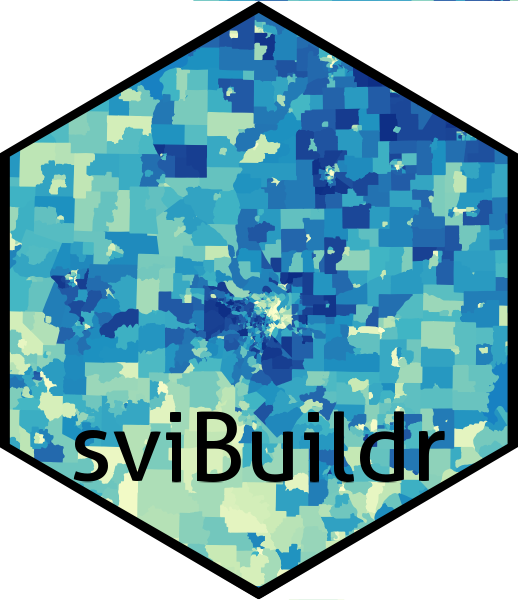

sviBuildr is an R package that allows users to download or construct Social Vulnerability Index datasets as tidyverse dataframes or as simple features dataframes for spatial analyses. Users can choose to download precompiled datasets from the CDC or compile the SVI with data from the US Census Bureau’s American Community Survey.
Pre-compiled SVI data is only available for individual states or as a single SVI for the entire nation. Downloading raw Census data and compiling the SVI with sviBuildr allows users to construct an SVI for any study area in the US. For example, one could calculate the SVI for a study area consisting of three states in which SVI scores are calculated by comparing values across counties in just the three states rather than across all 50 states:
library(sviBuildr)
tri_state_svi <- calculate_svi(
geography = "county", year = 2020, state = c("ME", "NH", "VT")
)Currently, calculating the SVI is only available for the year 2020 using the updated method published by the CDC/ATSDR [1].
This package utilizes the tidycensus package to interface with the US Census Bureau API and download the data for compiling the SVI [2].
Note: This package is not endorsed or developed by the CDC/ATSDR nor has it undergone peer-review. For official documentation, publications, and other information, please visit the official Social Vulnerability Index web page at https://www.atsdr.cdc.gov/placeandhealth/svi/index.html.
Installation
sviBuildr can be installed from this repositority using:
install.packages('devtools')
devtools::install_github('sebastianrowan/sviBuildr')